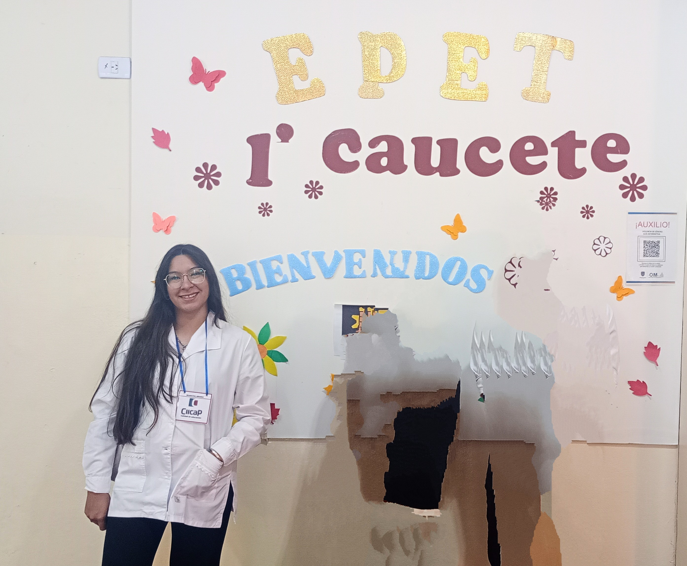

Reflexiones y recursos de mi experiencia educativa
Inicio
¡Bienvenidos a mi página web! Aquí comparto mi experiencia como docente en formación, las metodologías que utilizo y los recursos educativos que he desarrollado.
Percibiendo la Institucion
Practica Docente II "Institucion Educativa"
Instituto Superior de Formacion Docente: CIICAPProfesorado: Tecnologia de la Informacion y Comuicacion
Alumna: Carla, Balmaceda
DNI: 31.633.778
Cordinadora de Practicas: Cecilia Procopio
Directora: Graciela Sanchez
Profesora: Nadia Martinez
Comenzaremos a conocer la Escuela de Educacion Tecnica N°1 (EPET N°1) de Caucete, San Juan. La cual se distingue por su compromiso con la formacion tecnica y su perspectiva en la innovacion educativa.
En el transcurso de la observacion llevada a cabo en este establecimiento, se recolectaron datos importantes que destacan su contexto institucional y la utilizacion de tecnologias de la informacion y comunicacion (TIC) en el desarrollo educativo.
Contexto Institucional
La institución se encuentra ubicada en la localidad de Caucete,en el barrio justo.p castro 1/ 6 de agosto y chaco, una zona urbana, con acceso a servicios básicos y una comunidad activa. El edificio de la escuela es amplio y eficaz, en la entrada se observa el nombre de la institución, una vez adentro se puede perceber, la secretaria, y varias aulas, a mano derecha un pasillo que se dirige a un patio, al fondo está las nueva infraestructura, que son salones amplios, donde se dictan los diferentes talleres, y materias de enseñanza técnica-profesional. La escuela cuenta con una matrícula de 620 alumnos. El cuerpo docente está compuesto por profesionales especializados, mientras el personal no docente incluye personal administrativo y personal de apoyo. La EPET N°1 mantiene una relación activa con la comunidad local, participando en eventos y proyectos colaborativos, como jornadas, ferias, etc.
Trayectoria Institucional
La escuela Tecnica y profesional de Caucete. Fue inaugurada oficialmente el 5 de marzo de 1979 en el Barrio Justo P. Castro I, en un edificio donado por la Cooperativa del barrio. A lo largo de los años, se consolidó como una institución clave en la formación de técnicos, ampliando continuamente su oferta educativa. En un principio, la escuela ofreció la especialidad de Construcciones, otorgando el título de Maestro Mayor de Obras. Posteriormente, en 1983, incorporó la especialidad de Electromecánica, formando técnicos en equipos e instalaciones electromecánicas. En 2015, introdujo la especialidad de Informática, brindando formación como Técnico en Informática Profesional y Personal. Estas especialidades destacan por su contribución al desarrollo técnico y productivo de la región. El establecimiento se ha caracterizado por fomentar un aprendizaje práctico, involucrando a estudiantes en proyectos de construcción y mejoras en las instalaciones. Además, la escuela es reconocida por su biblioteca, su participación en eventos educativos como ferias de ciencia y olimpíadas, y por ser un referente en la educación técnica en San Juan
Historia de la escuela
Frente de la escuela
Historia de la Escuela Provincial de Educación Técnica (EPET) N°1 de Caucete comienza en 1972 con la iniciativa del Ing. Rogelio Boero y el Sr. Ildefonso Clavijo, quienes gestionaron la creación de una escuela técnica en Caucete ante la Comisión Provincial de Educación Técnica. Fundacion y Primeros Años (1974-1979): -1974: Se acuerda la creación de la ENET N°1 de Caucete entre el Ing. Carlos A. Benítez y el Ing. Rogelio Boero. -1975: La escuela se inaugura el 4 de abril en la Escuela Manuel P. Antequeda, iniciando actividades el 7 de abril. -1976: La Fuerza Aérea Argentina entrega la primera Bandera de Ceremonia. -1977-1979: Tras la paralización de la construcción del nuevo edificio por el Banco Hipotecario Nacional, el Ministro de Bienestar Social se involucra en la finalización del mismo. -En 1979, se inaugura el nuevo edificio escolar. Desarrollo y Expansión (1980-1996): -1980: Se habilita el Ciclo Superior de la especialidad de Construcciones. -1981-1983: Se inauguran talleres de enseñanza práctica y el playón polideportivo. Se implementa la especialidad de Técnico Mecánico. -1988-1991: Se llevan a cabo la primera muestra didáctica y la primera Maratón Intercolegial. Se inaugura el laboratorio de informática y se recibe la primera computadora. Se crea la tercera especialidad de Técnico en Informática. -1992: La escuela pasa a depender de la jurisdicción provincial, cambiando su sigla a EPET N°1 de Caucete.
Sobre mí

¡Hola! Mi nombre es Carla Balmaceda, soy docente en formación . Actualmente me encuentro desarrollando mis prácticas docentes en instituto CIICAP y explorando nuevas formas de motivar a mis estudiantes a alcanzar su máximo potencial. Además de mi interés por la enseñanza, disfruto investigar nuevas metodologías, crear recursos educativos, etc. Mi objetivo es seguir aprendiendo y creciendo como profesional para ofrecer experiencias educativas significativas y memorables. En esta página comparto reflexiones, proyectos y recursos relacionados con mi práctica docente, con la esperanza de inspirar y conectar con otros colegas apasionados por la educación. ¡Gracias por visitarme! 😊
Reflexiones
Creo en el aprendizaje activo y en la participación de los estudiantes como protagonistas de su propio proceso de aprendizaje.
Practica Docente II
Indice de temas
Todos pueden aprender y gestionar con aulas heterogeneas enseñar y aprender en la diversidad de rebeca anijovich
Anijovich sostiene que todos los estudiantes tienen la capacidad de aprender, pero para lograrlo, es fundamental que los docentes adopten un enfoque inclusivo, diverso y reflexivo en su práctica pedagógica. Cada alumno tiene sus propias capacidades, intereses, necesidades y ritmos de aprendizaje. La tarea del docente es crear estrategias que respeten y valoren estas diferencias, en lugar de homogenizar la enseñanza. El diseño de las clases debe contemplar la inclusión de múltiples formas de abordar los contenidos, utilizando metodologías flexibles que permitan que todos los estudiantes se conecten con el aprendizaje. La evaluación no debe ser un instrumento de exclusión o castigo, sino una herramienta que permita identificar qué sabe el estudiante y cómo puede avanzar. Es fundamental que la evaluación sea continua, formativa y significativa. Los educadores deben analizar constantemente su práctica, cuestionarse y adaptar sus estrategias para responder a las necesidades de sus estudiantes. a inclusión y el aprendizaje efectivo requieren del trabajo conjunto entre docentes, familias, equipos interdisciplinarios y los mismos individuos. "Todos pueden aprender" nos invita a reconfigurar la mirada sobre la educación, cuestionando las prácticas tradicionales que muchas veces excluyen a ciertos estudiantes. La obra pone en evidencia que el aprendizaje no es un privilegio de algunos, sino un derecho universal que se puede garantizar mediante la implementación de estrategias pedagógicas inclusivas y respetuosas. Anijovich desafía al docente a salir de su zona de confort, replantear sus prejuicios y asumir un papel activo en la creación de oportunidades para todos sus alumnos. No se trata únicamente de transmitir conocimientos, sino de construir un entorno donde cada estudiante se sienta valorado y capaz.
Anijovich plantea que las aulas heterogéneas son una realidad inherente a la educación, ya que cada estudiante llega con experiencias, intereses, habilidades, culturas y ritmos de aprendizaje únicos. En este contexto, el desafío de la enseñanza no es reducir las diferencias, sino gestionar esa diversidad de manera intencional para generar procesos inclusivos y equitativos. En lugar de intentar homogenizar, el docente debe fomentar el respeto y la valoración de las diferencias, ayudando a los estudiantes a construir aprendizajes significativos desde su propia realidad. gestionar aulas heterogéneas implica: Diseñar actividades flexibles Promover la participación activa Diferenciación pedagógica Anijovich resalta la importancia del docente reflexivo, que evalúa su práctica, no solo conocimiento técnico, sino también sensibilidad y compromiso con el aprendizaje de todos. Una evaluación justa y formativa es esencial en aulas heterogéneas. Esto implica reconocer que no todos los estudiantes progresan al mismo ritmo ni de la misma manera, y diseñar instrumentos que valoren el proceso, no solo el resultado. Enseñar en la diversidad Anijovich nos invita a repensar la educación desde la inclusión, reconociendo que enseñar en la diversidad no significa enseñar menos, sino enseñar diferente. Esto requiere que el docente sea un mediador entre el conocimiento y los estudiantes, creando puentes que permitan que todos aprendan y se sientan valorados. La heterogeneidad no es un problema que resolver, sino una realidad que celebrar. Gestionarla adecuadamente es el camino hacia una educación más justa, equitativa y enriquecedora, tanto para los estudiantes como para los docentes.
Libro Digital
Los alumnos de 3er año podran acceder a contenidos de Informatica
Herramientas del libro
Muro sonoro
En la era de la informacion, la incorporacion de las tecnologias innovadoras en la formacion se ha convertido en una escasez para potenciar el proceso de enseñanza y aprendizaje.
En este medio, se desarrolla esta creacion de un "muro sonoro", un comienzo que aplica la herramienta Padlet para muestra sonidos e imagenes de la escuela, siendo un ambiente creativo e interactivo.